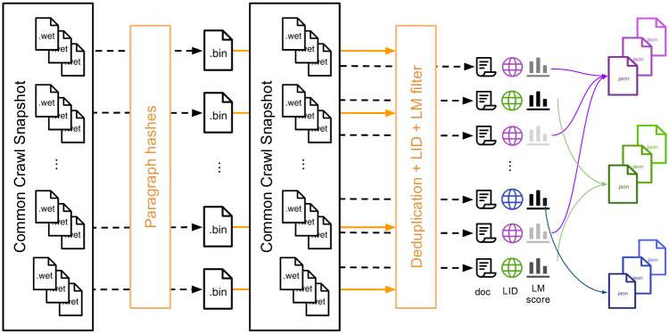

发展脉络
预训练从 CLM/MLM 目标扩展到多 token 预测、课程数据和合成数据，训练规模则由 Kaplan 经验律推进到 Chinchilla 的计算最优配比。
「Garbage in, garbage out」这句话在大模型时代被放大了一万倍：用 15T tokens 的高质量数据训练，和用 15T tokens 的垃圾训练，结果天差地别。数据工程不是预处理脚手架，而是预训练的核心竞争力。这一节讲真实语料从互联网原始 HTML 到可训练 token 的完整管线。
预训练数据管线的核心流程：从互联网原始数据出发，经过抽取 → 质量过滤 → 去重 → 配比 → 课程设计五步，最终产出训练用的 token 流。每一步都在「留好的、去掉坏的」，而且后一步的效率依赖前一步的干净度——在垃圾上做去重只是浪费算力。
在讲每一步之前，先感受一下这条管线的「漏斗形状」。这是理解为什么每一步都值得投入工程资源的前提：假设你从一次 Common Crawl 快照出发，每一步大致会剩下多少？
| 步骤 | 典型留存比例 | 被砍掉的主要是什么 | 这一步的单位成本 |
|---|---|---|---|
| HTML → 正文抽取 | 体积上只剩个位数百分比 | 标签、脚本、样式、导航、广告 | 低（纯 CPU，可并行） |
| 语言识别 + 分流 | 看目标语言，单一语种通常留 5%–10% | 其他语种、无法判定语种的碎片 | 低（fastText 每秒可处理上万篇） |
| 启发式规则过滤 | 留 30%–60% | 过短页面、乱码、符号刷屏、重复行 | 低 |
| 分类器 / 模型打分 | 留 10%–40%（阈值决定） | SEO 垃圾、机翻、内容农场 | 中（需批量推理） |
| 去重 | 再去掉 30%–50% | 转载、模板页、近似复制 | 高（要做全局比对，内存与 IO 密集） |
上表是各家公开管线报告中的常见区间，用于建立数量级直觉，不是精确标准；实际留存率高度依赖阈值设定与目标语言。
把这几个比例连乘一下你就明白了：原始网页里最终能进入训练集的，往往是很小的一个零头。这也解释了为什么各家都在拼「同样的 CC 快照，谁能榨出更多可用 token」——这不是省钱，是在数据墙面前抢时间。
用具体的数字走一遍，能立刻感受到这条管线的「榨取率」有多低。假设你从一次 Common Crawl 快照里拿到 100 万篇文档，按本页开头那张表的典型留存率连乘：
也就是一百万篇原始网页，最终只有约 0.04% 能进训练集。这个数字听起来夸张，但它的工程含义非常实在：数据管线的单位成本必须按「处理 100 万篇 → 产出 430 篇」来算——所以去重这类「越到后面越贵」的步骤，一定要在充分过滤之后再做，否则就是在浪费算力处理注定会被丢掉的文档。
Common Crawl 是目前最大的公开网页爬虫数据集，定期抓取覆盖数十亿网页，以 WARC 格式存储（具体规模以官方每期公告为准）。它是几乎所有大模型预训练数据的基础来源——GPT-3、LLaMA、RedPajama、Dolma 等都以 CC 为主干。
但 Common Crawl 是原始网页快照（WARC 文件），里面包含 HTML 标签、JavaScript、CSS、导航栏、广告、页脚等大量噪声。第一步——也是最容易被低估的一步——是把 HTML 干净地转成纯文本。
这一步该怎么系统化地做？CCNet 论文（LLaMA 系列数据管线的基础）给出了一张完整的处理流程图，是这一领域最常被引用的第一手图。它把「从一次 CC 快照到可训练语料」的整条链路画了出来。

新手读这张图，按流水方向抓四个环节：① 最左侧是数据源——把 Common Crawl 的 WET 文件（已抽取过的纯文本，见下文）下载下来，并对每个段落做哈希、按哈希分组保存成二进制文件。② 语言识别（LID）——用 fastText 语言分类器逐文档判断语种，只有目标语言（如英语）的文档继续往下走。③ 困惑度分档（Perplexity Filtering）——对每篇文档用语言模型算困惑度，按困惑度分档（如「高质量 / 中质量 / 低质量」三个桶），下游按需取档。④ 去重（Deduplication）——去掉近重复文档后，输出按语言分桶的训练语料。整条管线每一环都连着一个「丢弃」的分支，和本页前面那张状态图是完全一致的思路。
这张图的价值还在于它点明了两个工程决策：一是「先 LID 再去重」还是「先去重再 LID」——论文里专门做了实验（Figure 3），结论是顺序会影响各语言的数据量，需要按你的目标语言分布来选择；二是困惑度过滤的阈值——CCNet 按困惑度把语料分成三档而不是一刀切，因为有些下游任务需要「低困惑度」（更干净的文本），而有些任务其实能容忍甚至需要更多样的文本。把「过滤」做成「分档存储」而不是「直接删除」，是这条管线最有借鉴价值的工程习惯——正好呼应了本页后面「保留质量信号」的建议。
难点不在于去掉标签，而在于区分「正文」和「模板」。一个典型的新闻页面上，正文可能只占页面文字的三成，剩下七成是导航菜单、相关推荐、评论区、Cookie 提示、版权声明。这些模板文字有两个恶劣性质：
所以抽取质量决定了后续所有步骤的效果上限。上游多留一点垃圾，下游要花十倍的力气去补救，而且往往补不干净。
| 工具 | 方法 | 特点 |
|---|---|---|
| trafilatura | 规则 + 启发式 | 对新闻/博客正文抽取效果好，开源 Python 库 |
| resiliparse | 规则 + DOM 树分析 | 高性能 C++ 实现，适合大规模批量处理 |
| jusText | 段落级启发式 | 基于 HTML 结构的段落保留/丢弃决策 |
| Boilerplate removal | 模板检测 | 识别并移除重复的页面模板（导航、页脚） |
<p> 标签就当正文用了。这会留下大量导航链接、评论区、Cookie 提示等噪声文本。LLaMA 论文专门提到用 CCNet 管线做语言识别和文档质量评分——抽取质量直接决定后续所有步骤的效果上限。
抽取后还需要做语言识别（用 fastText 或 CLD3 分类），将文档按语言分流。CCNet 管线是 LLaMA 系列使用的事实标准：它把每篇文档用语言模型打 perplexity 分，保留低困惑度（更像自然语言）的文档。
还有一个常被忽略的选项：Common Crawl 除了 WARC，也提供已经抽取过的 WET 格式纯文本。用 WET 省事，但 RefinedWeb 的作者明确指出，WET 的抽取质量不足以支撑高质量语料，他们选择从 WARC 重新抽取。这是一个典型的「上游多花一分力气、下游省十分」的决策。
抽取出来的文本仍然包含大量低质量内容：乱码、重复短语、SEO 垃圾、机器翻译、极短页面等。质量过滤分两个层次：启发式规则和分类器过滤。
这是最便宜也最有效的第一道关卡，几乎所有数据管线都用。它们的共同特点是单文档可判、无需模型、可以在流式处理中完成：
| 规则 | 常见阈值量级 | 拦截的典型内容 | 误伤风险 |
|---|---|---|---|
| 文档词数下限 | 少于几十个词即丢弃 | 404 页、导航碎片、纯图片页 | 误伤短小精悍的问答、诗歌 |
| 平均词长 | 过短或过长都异常 | 乱码、被切碎的编码、超长拼接串 | 误伤化学式、代码片段 |
| 符号与文字比 | 非文字字符占比过高即丢弃 | 乱码、表格残渣、颜文字刷屏 | 误伤数学公式、代码 |
| 重复行 / 重复 n-gram 占比 | 重复段落占比过高即丢弃 | 模板刷屏、列表页、SEO 关键词堆砌 | 误伤歌词、法律条文、目录 |
| 结尾标点的行占比 | 正常句子结尾的行应占多数 | 导航菜单、标签云、商品列表 | 误伤诗歌、字幕、聊天记录 |
| 脏词命中数 | 命中若干个即丢弃或降权 | 成人内容、垃圾广告 | 误伤医学、法律、社会学讨论 |
| 语言识别置信度 | 低于阈值即丢弃 | 多语言混排、机器乱码 | 误伤中英夹杂的技术文档 |
具体阈值各家差异很大，且必须针对目标语言重新校准——中日韩不分词，按「词数」设阈值会全军覆没。
写成代码，一组启发式规则大致长这样。注意每一条都返回具体原因而不只是布尔值——这样才能统计「到底是哪条规则砍掉了多少数据」，这是调阈值时唯一靠谱的依据：
import re
PUNCT_END = ("。", "！", "？", ".", "!", "?", "\u201d")
def quality_reject_reason(text, min_words=50, max_symbol_ratio=0.4,
max_dup_line_ratio=0.3, min_end_punct_ratio=0.3):
"""返回 None 表示通过；否则返回被拒的原因字符串"""
words = text.split()
if len(words) < min_words:
return "too_short"
non_alnum = sum(1 for c in text if not c.isalnum() and not c.isspace())
if non_alnum / max(len(text), 1) > max_symbol_ratio:
return "symbol_ratio"
lines = [ln.strip() for ln in text.splitlines() if ln.strip()]
if lines:
dup = 1 - len(set(lines)) / len(lines)
if dup > max_dup_line_ratio:
return "duplicate_lines"
ended = sum(1 for ln in lines if ln.endswith(PUNCT_END))
if ended / len(lines) < min_end_punct_ratio:
return "not_sentences" # 多半是导航或列表页
return None
# 统计各规则的拦截量，是调阈值的唯一靠谱依据
from collections import Counter
stats = Counter(quality_reject_reason(doc) for doc in corpus)
print(stats) # 例如 Counter({None: 41230, 'too_short': 18022, ...})启发式过滤后，用更强的判别手段做精细筛选。这条路线大致经历了三代，越往后越贵、也越准：
| 代际 | 做法 | 判据是什么 | 成本 | 典型问题 |
|---|---|---|---|---|
| 第一代：困惑度打分 | 用小语言模型给文档打 perplexity，保留低困惑度的 | 「像不像自然语言」 | 低 | 偏爱平庸文本，通顺的废话得分很高 |
| 第二代：参考语料分类器 | 用 fastText 训一个二分类器，区分「像维基/像 Reddit 高赞」和「像随机网页」 | 「像不像某个参考语料」 | 低到中 | 标杆语料的风格偏见会被整体放大 |
| 第三代：LLM 标注 + 蒸馏打分器 | 用大模型对样本按「教育价值 / 信息密度」打分，再蒸馏成一个小分类器批量跑全量 | 「有没有学习价值」 | 中到高 | 大模型的偏好即评判标准，长尾领域可能被系统性低估 |
训练一个二分类器区分「像维基百科的高质量文本」和「不像」。LLaMA 和 RedPajama 用 fastText 做这个分类，保留评分高的文档。简单有效，但以维基百科为标杆可能过于「正式」。
用一个小而强的语言模型给文档打 perplexity 或 log-likelihood 分。保留「好模型觉得正常」的文档。GPT-3 和 PaLM 都用了这种方法。可以理解为：如果一个文档连 GPT-2 都觉得不像人话，它大概率不是好训练数据。
第三代方法是近两年最明显的变化：FineWeb-Edu 的做法是先用大模型给数十万篇样本按「教育价值」打 0 到 5 分，再用这些标注训一个轻量分类器，把评分能力铺到全量语料上。这条路线的价值在于，它第一次把过滤判据从「像不像人写的」变成了「值不值得学」——两者是完全不同的问题。
互联网数据天然充斥着重复——同一篇文章被转载无数次，同一模板生成无数个垃圾页面。研究表明，去重是所有数据清洗步骤中投入产出比最高的一项：Lee et al. (2022) 的实验显示，在 C4 上做去重后训练的模型，在相同训练量下性能显著优于未去重版本，同时明显降低了模型逐字背出训练数据的概率。
去重带来收益的机制有三条，值得分开理解：
「去重」不是一个动作，而是一个需要选粒度的决策。不同粒度的效果和代价差别巨大：
| 粒度 | 怎么做 | 抓得到什么 | 代价与副作用 |
|---|---|---|---|
| 文档级精确 | 整篇取哈希，哈希相同即重复 | 完全一致的转载 | 极便宜；改一个标点就漏 |
| 文档级模糊 | MinHash + LSH 估 Jaccard 相似度 | 改标题、加广告的转载 | 主流方案；阈值难调，太松会误删同题材文章 |
| 段落 / 行级 | 对每行取哈希，跨文档删重复行 | 整站共用的导航栏、免责声明 | 会把文档切得支离破碎，需谨慎 |
| 子串级 | 后缀数组找出所有超长重复子串并删除 | 嵌在正文中间的模板段落 | 效果最彻底，但内存与实现复杂度最高 |
对整篇文档做哈希（如 SHA-256），哈希值相同的就是完全重复文档。实现简单、速度极快，能去掉相当比例的明显重复。但只对完全一致的文本有效——一个标点不同就会逃过。工程上通常先做一次归一化（统一空白符、统一全半角、去掉不可见字符）再取哈希，能显著提高命中率。
真实场景中的重复往往不是完全一致的：转载时改了标题、加了广告、换了排版。模糊去重用 MinHash 算法估计文档间的 Jaccard 相似度，再用 LSH（Locality-Sensitive Hashing） 加速近似最近邻搜索：
import hashlib
def shingles(text, n=5):
"""把文档切成 n-gram 集合（按字符，适合中文；英文可按词）"""
return {text[i:i + n] for i in range(max(len(text) - n + 1, 1))}
def minhash_signature(sh, num_perm=128):
"""对每个哈希种子取集合内的最小哈希值，得到长度 num_perm 的签名"""
sig = []
for seed in range(num_perm):
m = min(
int(hashlib.md5(f"{seed}:{s}".encode()).hexdigest()[:16], 16)
for s in sh
)
sig.append(m)
return sig
def lsh_buckets(sig, bands=16):
"""把签名切成 bands 段，每段整体作为一个桶键"""
rows = len(sig) // bands
return [tuple(sig[b * rows:(b + 1) * rows]) for b in range(bands)]
# 只要两篇文档在任意一个 band 上完全相同，就进入候选集做精确比对
buckets = {}
for doc_id, text in corpus.items():
for key in lsh_buckets(minhash_signature(shingles(text))):
buckets.setdefault(key, []).append(doc_id)上面是便于理解的教学实现；生产环境请用 datasketch 等成熟库，并把分桶放到分布式框架上做。
MinHash 的优势是线性时间复杂度，能处理 TB 级数据。CCNet 和 BigScience 的数据管线都用这个方法。实际操作中，模糊去重能再去掉相当比例的近似重复，与精确去重合计的去重率通常在 30%–50% 这个量级。
设两篇文档的 n-gram 集合为 $A$ 和 $B$。取一个把所有可能 n-gram 随机打乱的置换 $\pi$，定义 $h_\pi(A) = \min_{a \in A} \pi(a)$，也就是「$A$ 里排名最靠前的那个元素」。
关键观察：$h_\pi(A) = h_\pi(B)$ 当且仅当 $A \cup B$ 中排名最靠前的那个元素恰好落在交集 $A \cap B$ 里。由于置换是均匀随机的，并集里每个元素排第一的概率相等，所以
也就是说，单个哈希碰撞的概率恰好等于 Jaccard 相似度。用 $k$ 个独立哈希各算一次，统计相同的比例，就是 $J$ 的无偏估计，估计的标准差约为 $\sqrt{J(1-J)/k}$。取 $k=128$ 时，标准差不超过 0.045，对 0.8 这种阈值判断已经够用。
LSH 在此之上再加一层：把 $k$ 个哈希切成 $b$ 个 band、每个 band $r$ 行（$k = b \times r$）。两篇文档在某个 band 上完全相同的概率是 $J^r$，在至少一个 band 上相同（即成为候选对）的概率是
这条曲线是 S 形的，拐点约在 $J^* \approx (1/b)^{1/r}$。举个能算的例子：$k=128$、$b=16$、$r=8$，则 $J^* \approx (1/16)^{1/8} \approx 0.71$。也就是说这套参数会把相似度 0.71 以上的文档对高概率捞出来，0.5 以下的基本放过。
调参的实际含义：$b$ 调大（band 更多、每 band 更短）→ 阈值下降 → 召回更多重复但误伤上升；$r$ 调大 → 阈值上升 → 更保守。想去重更狠就加 $b$，怕误删就加 $r$。
清洗完的数据来自不同来源：网页、维基百科、书籍、代码、论文、对话。直接混在一起训练通常不是最优的——不同来源的数据质量和信息密度差异巨大。配比（mixture ratio）决定了模型「吃到」的知识结构。
| 数据来源 | 典型配比 | 主要作用 |
|---|---|---|
| 网页（CC 等） | 50-70% | 覆盖面广、通用知识、口语化 |
| 维基百科 | 3-5% | 高质量结构化知识 |
| 书籍 | 5-15% | 长文本理解、深度知识 |
| 代码 | 5-15% | 逻辑推理、代码能力 |
| 论文 | 2-5% | 学术知识、专业领域 |
| 对话 | 1-5% | 对话格式感知 |
上表为常见经验范围，具体配比因模型和团队而异，非精确标准。
这里有个容易搞混的概念：配比说的是训练时看到的 token 占比，不是磁盘上的数据量占比。维基百科只有几十 GB，但如果你把它重复采样 4 遍（epoch = 4），它在训练 token 里的占比就翻了 4 倍。「重复采样几遍」是配比的隐藏旋钮——高质量小语料通常会被重复多遍，低质量大语料反而只过一遍。研究表明少量重复（约 4 个 epoch 以内）损失几乎不受影响，但重复太多次收益会快速衰减。
配比的确定没有理论最优解，通常靠消融实验：在小模型上试不同配比，看下游任务表现。几个已知经验：
数据课程（Data Curriculum）是指在训练过程中改变数据分布——不同阶段喂不同配比或难度的数据。这借鉴了人类学习的「由易到难」思路。
训练前期多给通用网页数据铺覆盖面，后期提高高质量来源（维基、书籍、精选代码）的比例。这是目前落地最广的一类课程。
按文本复杂度排序，先学短文本、简单句式，再学长文本、复杂句式。一些小模型实验显示有效，但大规模验证尚不充分。
课程设计的研究结论尚不统一：部分实验显示有效（尤其在数据量有限时），部分实验显示在充分大数据量下收益不显著。实操中的常见做法是训练后期加入更高比例的高质量数据，配合学习率衰减一起进行，业内一般称为「退火」或「中期训练」阶段——让模型在最后一段用最好的语料「复习」。长上下文能力的注入通常也放在这个阶段：前期用 4K 或 8K 序列高效训练，最后几个百分点的 token 才切到长序列，避免全程为长上下文买单。
数据管线的每一步都在做取舍，需要量化指标来指导决策。常见评估方法：
数据工程的门槛这几年被开源社区显著拉低了。了解这条演进线，可以帮你判断该拿哪个数据集做起点：
| 数据集 / 管线 | 主要来源 | 公开规模 | 它解决了什么问题 |
|---|---|---|---|
| CCNet | Common Crawl | 管线，非固定数据集 | 语言识别 + 困惑度分档 + 去重的标准流程，LLaMA 系列采用 |
| The Pile | 22 个精选来源混合 | 约 825 GB | 证明「多来源精选」能显著优于纯网页 |
| RefinedWeb | 纯 Common Crawl | 公开释出约 600B tokens | 反过来证明：只要过滤和去重够狠，纯网页也能打赢精选语料 |
| RedPajama-V2 | Common Crawl | 约 30T tokens | 不做硬过滤，而是把大量质量信号作为字段随数据一起发布 |
| Dolma | 网页 + 代码 + 论文 + 书籍 | 约 3T tokens | 数据集与处理工具链一并开源，可复现 |
| FineWeb / FineWeb-Edu | Common Crawl | 约 15T / 约 1.3T tokens | 把「教育价值打分」这一代过滤方法做成公开基线 |
规模数字取自各数据集的公开说明，具体以官方发布页为准；使用前务必确认各自的许可条款，相关合规问题见 数据版权与合规。
数据工程的直觉很难靠读文档建立，但可以靠一个小实验建立。下面这个流程不需要集群，一台笔记本、几千篇文档就能跑：
BeautifulSoup.get_text() 和 trafilatura 各抽一遍，随机挑 20 篇人工对比。你会直观看到「导航栏噪声」到底长什么样。quality_reject_reason，打印 Counter。重点看被各条规则砍掉的样本——随机抽 10 条读一读，判断是真垃圾还是误伤。这个实验能带走三个无法从文字里获得的认知：一是抽取工具的差距远比想象中大；二是启发式阈值几乎一定会误伤，问题只是能不能接受；三是去重阈值是个主观选择，没有「正确答案」。
跑完之后如果想继续往下走，可以接上 分词与词表 看看清洗后的文本怎么变成 token，或看 实战：手写 MiniGPT 把这批数据真的喂进一个小模型。
前面的五步解决了“怎样得到一批能训练的数据”，但面试和生产系统还会追问三个问题：为什么这条样本被保留、它是否与评测集泄漏、下个月能否用同一版本重新得到完全相同的 token 流。答案不是再加一个过滤器，而是把质量信号、去重证据、采样决策和版本元数据一起保存，形成可审计的数据产品。本节给出一套适用于约 15T tokens 规模的落地框架；阈值是起始点，必须用分层抽检和固定 token 预算的消融实验校准。
不要把质量设计成一个不可解释的总分。推荐把文档分成四层，并保留每层的原因码：L0 硬规则只处理确定性坏数据，例如空文档、编码损坏、明显恶意脚本和极端重复行；L1 统计与语言信号记录长度、语言置信度、符号率、困惑度、重复 n-gram 比例等连续特征；L2 分类器/模型打分估计“教育价值、信息密度、自然度、代码可执行性”等软指标；L3 人工抽检对每个域、语言、来源、分数桶做分层采样，检查误杀和长尾覆盖。L0 可以直接丢弃，L1/L2 更适合排序、分桶和采样，L3 用来校准阈值及发现分布漂移。
| 质量层 | 主要信号 | 决策方式 | 必须记录的证据 |
|---|---|---|---|
| L0 硬规则 | 空值、乱码、恶意脚本、极端长度 | 确定性拒绝或隔离 | rule_id、版本、命中字段 |
| L1 可解释特征 | LID、困惑度、符号比、重复率、语言覆盖 | 分桶、排序、域内阈值 | 特征值、模型版本、阈值 |
| L2 模型评分 | 教育价值、信息密度、毒性/广告风险、代码质量 | 软权重或分层采样 | score、校准集、置信区间 |
| L3 人工抽检 | 按域/语言/分数/来源分层抽样 | 修订规则、阈值、抽样权 | 样本 ID、标注者、复核结论 |
抽检不能只看“通过样本”。每个桶至少同时抽取通过、拒绝和边界样本，并计算 precision、recall、误杀率和域覆盖率。对模型评分要做校准：同一分数在中文技术文档、论坛口语、代码和法律文本中的含义可能不同。生产上可以采用“硬规则保底 + 域内分位数阈值 + 少量低分探索”的策略，避免模型只学到百科式正式语言。所有被拒样本也应保留轻量 manifest 和质量原因，而不是把原始内容无限期复制到多个地方。
质量分层还应关注“样本之间的关系”，而不只是单篇文档的分数。一个站点连续产生的数百万页面可能共享同一模板、同一作者或同一事实来源；如果只按文档级分数排序，模型会把站点规模误认为信息价值。可在 manifest 中增加来源域、作者/组织、抓取月份、主题簇和 cluster 规模，按这些维度做配额与上限。人工抽检也要覆盖低资源语言、少数代码语言、短文本、表格、公式和带噪 OCR，因为这些样本最容易被通用分类器低估。对争议样本建议双人复核并保留分歧标签，后续可把分歧最大的桶送去主动学习，而不是简单提高拒绝阈值。
阈值调优应先建立一套固定的 golden set：每个域有明确的“可训练、可探索、应拒绝”示例，并在规则、分类器和模型升级后重复评测。观察指标不应只有总体通过率，还包括按域的通过率、质量分布、token 贡献、重复簇大小、语言覆盖和文档新鲜度。若总体质量升高但某个领域的样本量骤降，应优先认为是分布偏移或误杀，而不是“清洗成功”。将数据切成 train、shadow 和 audit 三个视图：train 供训练，shadow 用于比较新旧策略但不进入训练，audit 保存抽检和污染证据，可大幅降低频繁调参的回滚成本。
Exact hash（归一化后 SHA-256 等）判断的是字节/字符序列是否完全相同，适合去掉重复下载、完全转载和同一文档的多份副本；它不理解语义，改一个词就可能漏检。MinHash + LSH先把文本转换为 shingle 集合，近似估计 Jaccard 相似度，适合“加了标题、广告或少量改写”的近重复；它依赖 n-gram 粒度和 band/row 参数，短文本、代码和模板文本需要单独校准。SimHash把词或 n-gram 的特征加权投影为固定长度指纹，使用汉明距离找近邻，速度和存储都很好，适合流式候选召回；但它近似的是特征方向，不等价于 Jaccard，也不适合直接当语义相似度。工程上常用三级级联：先归一化 Exact hash，再用 SimHash 找低成本候选，最后对候选做 MinHash/Jaccard 或业务规则复核。
| 方法 | 擅长边界 | 典型漏检/误报 | 适合位置 |
|---|---|---|---|
| Exact hash | 完全相同文本 | 微小改写即漏；归一化过强会误合并 | 第一道全量去重 |
| MinHash + LSH | 集合 Jaccard 高的近重复 | 短文本方差大；同主题文章可能误删 | 候选对精排与全局 dedup |
| SimHash | 特征分布相近、流式近邻 | 对改写/重排敏感；汉明阈值依域变化 | 低成本召回、在线去重 |
近重复不是“重复越多越好”。同一事实的独立报道可能共享实体和术语，却提供不同证据；若阈值过低，会损失多样性和长尾表达。反之，保留大量转载会让某个观点、网页模板或 benchmark 答案在 token 预算中获得异常高权重，导致过拟合、逐字记忆、评测虚高和隐私风险。建议按来源质量、时间、新鲜度和长度定义保留优先级，并将被合并文档存成 cluster_id、代表文档 ID、相似度和决策规则，支持之后重放。
去重阈值最好按文档长度设定，而不是全局只设一个数。长文档的 Jaccard 估计较稳定，短文档中几个共同的 boilerplate 就可能造成很高相似度；因此短文本可要求更高阈值或直接采用精确 hash，代码可按函数/文件粒度结合 AST 或 token shingles，表格和公式则要避免把列名模板当作正文重复。对于同一 cluster 的代表文档，通常优先选择质量分更高、来源更可靠、发布日期更早或许可证更清晰者，但保留少量独立来源作为多样性样本，并设置 cluster 的最大曝光次数。
还要区分“训练集内部去重”和“跨数据集去重”。前者控制重复曝光，后者处理网页与维基、书籍、论文之间的转载关系；如果各来源分别去重再拼接，跨源重复会重新出现。一个稳健流程是先做每源的 Exact hash 降低体积，再将所有来源映射到统一规范化文本空间，用 SimHash/MinHash 建跨源候选，最后按质量和许可证策略选择代表。去重统计应报告候选对数量、最终合并簇数、被删 token、各域损失和阈值敏感性，而不是只报一个“去重率”。
def dedup_decision(doc):
normalized = normalize(doc.text)
exact = sha256(normalized.encode()).hexdigest()
if exact_index.contains(exact):
return "drop", {"reason": "exact_hash", "cluster": exact}
simhash = make_simhash(normalized)
candidates = simhash_index.nearby(simhash, max_hamming=3)
for other in candidates:
jaccard = minhash_jaccard(normalized, other.text, ngram=5)
if jaccard >= threshold_for(doc.domain, doc.language):
return "drop", {"reason": "near_duplicate", "cluster": other.cluster_id,
"similarity": jaccard}
return "keep", {"exact_hash": exact, "simhash": simhash}配比必须分清三个口径：原始数据量、去重后可用量、训练时实际 token 曝光量。若域 $i$ 的可用 token 为 $N_i$，直接按数据量采样会使大域支配训练；temperature sampling 常写为 $p_i \propto N_i^\alpha$，其中 $\alpha<1$ 会提高小域的相对概率，$\alpha=1$ 是按规模采样。它不是越小越好：过度上采样会重复小语料，放大记忆和域偏差。可为每个域设最小/最大曝光上限，再用有效 token 数计算实际比例。
Domain balance不只看语言。至少要同时监控语言、主题、来源、时间、文档长度、质量桶和代码语言等边际分布，避免“中文比例达标但中文全来自同一站点”的假平衡。对低资源域，可以保留一个小的探索配额；对已经饱和的网页域，则采用去重后的新鲜文档优先。每次配比变更都应在固定 token budget、相同 tokenizer、相同优化器和随机种子下做 ablation，比较总 loss、域内 held-out loss、通用 benchmark、代码/数学能力和记忆性指标。
课程设计可以分为三段：前期以多样、低成本的通用数据建立覆盖；中期提高高质量知识、代码和长文档；末期进行质量退火与长上下文注入。混合权重应线性或平滑变化，避免硬切换引起 loss spike。消融至少包括：固定混合 vs 温度采样、无课程 vs 质量退火、不同 $\alpha$、不同代码/书籍上限、以及去重前后对照。必须报告“相同训练 token 下的收益”，不能用更多 epoch 掩盖重复采样的代价。
配比实验还要控制数据“新鲜度”和来源泄漏，否则结论可能被某个偶然快照主导。建议为每个域维护固定的 train/validation shadow 切分，记录实际看到的 token 数和有效 epoch；对上采样域报告 unique token 与 exposed token 两个指标。若代理模型给出的最优权重与人工经验差异很大，先检查代理模型是否在某个域过拟合、验证集是否含转载、以及权重是否把重复文本当成有效信号。对 15T 级别的正式实验，可先在 100M–1B token 的小预算上筛掉明显劣解，再在固定 compute 预算下验证前两三个候选，最后才投放全量。
评测污染检测要在训练前做，也要在训练后抽查。第一道防线是时间切分：为每条文档保留抓取时间、来源快照和发布日期；若 benchmark 发布日在 $t$，训练集原则上只允许使用 $t$ 之前的内容，发布日期缺失时进入风险桶。第二道防线是train/eval 去重：对评测题目、答案、题干变体和解释文本分别做归一化 Exact hash，并以字符/词 n-gram 做 MinHash、SimHash 近邻扫描。第三道防线是语义与模板审查：对高相似候选人工复核，因为只比答案会漏掉题干改写，只比 n-gram 又可能把同领域背景误判成泄漏。
检测报告至少给出：命中文档 ID、数据源、时间、重叠区间、相似度、匹配方法、是否进入训练、处置动作和复核人。对公开 benchmark，建议建立冻结的 eval fingerprint 库，在每次管线构建时自动门禁；对内部评测，要把测试集权限与生产数据写入隔离存储。发现泄漏后，不要只删一行数据，应按 cluster 追溯转载家族、重新计算 token 计数，并重跑受影响的训练/评测版本。
时间切分也有边界：网页的抓取时间不等于内容首次发表时间，转载页可能在 benchmark 发布后才抓到旧答案。因此应同时保存 crawl_time、页面发布日期、HTTP headers、快照批次和来源链；无法确认发布时间的文档放入“未知时间”风险桶，不能默认当作安全。对需要严格新鲜度的评测，可采用 benchmark 发布前若干月的安全缓冲区，并对高重叠但时间不明的样本人工复核。对于动态页面和代码仓库，则按 commit 时间或 release tag 切分，并在训练 manifest 中锁定 commit/快照，而不是只存 URL。
一个可回答面试、也可上线的架构是“不可变原始层 + 可重建中间层 + 内容寻址产物层”。原始 WARC/WET 只读保存，按抓取批次、来源、许可证和校验和登记；规范化文本、质量特征、去重索引、混合清单和 tokenizer 输出全部写入带版本号的分片，不原地覆盖。每个文档使用稳定 doc_id，每一步写入 parent_artifact、代码提交、配置哈希、模型版本、输入输出计数、随机种子和时间窗口。这样既能回答“这 512 tokens 从哪里来”，也能定位“哪一版规则删掉了它”。
吞吐设计上，按来源和时间切成可并行分片，避免把 15T token 当成一个巨型文件；每个分片产出 manifest、行数、字节数、token 数、质量分布、重复 cluster 数及 SHA-256。构建新版本时采用 copy-on-write：新分片全部通过校验后，原子地将“生产 manifest”指针切换到新版本；回滚只切回旧指针，不删除旧数据。重放时根据配置哈希和 DAG 依赖做增量计算，例如只改质量阈值就复用抽取和 hash，只改 tokenizer 才重跑 tokenization。上线前做小样本 golden set、分片校验、token 计数对账和 train/eval 门禁；任何失败都不能发布半成品 manifest。
可追溯不等于无限期保存原文。对受许可证、隐私或删除请求约束的来源，原始层应记录最小必要指针、哈希和访问策略，内容按保留期限管理；收到删除或授权变更时，通过 doc_id 和 cluster_id 找到所有派生分片、manifest 与训练快照影响范围。对于已经训练出的模型，治理系统至少要能定位受影响 checkpoint、停止继续分发并触发再训练评估。权限上将原始内容、质量特征、训练 manifest 和审计日志分级隔离，审计日志本身不可变，避免“为了可追溯而复制出更多敏感数据”。
# 伪代码：构建可重放的不可变 artifact
cfg_hash = sha256(canonical_json(config))
input_manifest = registry.require(input_version)
out = run_stage(stage="quality", input=input_manifest,
code_commit=GIT_SHA, config_hash=cfg_hash, seed=SEED)
registry.put(out.version, {
"parents": [input_manifest.version],
"shards": out.shards, "sha256": out.checksums,
"doc_count": out.docs, "token_count": out.tokens,
"quality_histogram": out.histogram
})
# 发布只更新指针；回滚/重放不改历史 artifact
registry.promote("train-prod", out.version)本章覆盖从数据到训练集群的完整预训练链路：目标函数、语料清洗与合成、Scaling Laws、并行策略、混合精度和稳定性。
阅读提示：预训练效果不是参数量单变量函数；数据质量、token 数、优化稳定性和通信效率共同决定最终结果。
最早系统刻画模型规模、数据量、计算量和损失之间幂律关系的工作。
Chinchilla 结论：固定算力下模型参数和训练 token 应共同增长，纠正只堆参数的直觉。
公开语料混合、来源比例和去重处理的代表性数据集论文。
张量并行、流水线并行和大规模 Transformer 训练工程的经典来源。
FSDP 的参数、梯度和优化器状态分片语义，适合将并行原理落到可运行配置。
资料优先选用原始论文、官方文档、大学课程和公共机构材料；链接按 2026-08-10 检索，具体版本以来源页面为准。
预训练从 CLM/MLM 目标扩展到多 token 预测、课程数据和合成数据，训练规模则由 Kaplan 经验律推进到 Chinchilla 的计算最优配比。
把数据去重、混合比例、token 预算、并行策略、checkpoint 和验证集视为同一个实验设计，而不是互相独立的脚本参数。
更多数据、更多参数和更长训练之间需要按计算预算平衡；数据污染、重复和合成数据坍缩会让离线 loss 失真。
持续预训练、数据飞轮、MTP、FP8 和新优化器仍在发展，必须报告数据谱系和消融实验。
能把抓取、正文抽取、质量过滤、精确/近似去重和数据配比做成版本化、可审计的数据流水线。
先修语言模型目标、反向传播和优化器；把 token 预算、数据版本和 checkpoint 视为实验输入。
处理至少 1000 篇混合 HTML，人工植入 20 对精确重复、20 对近似重复和 20 个低质页；输出过滤原因、内容 hash、MinHash cluster 与来源配比清单。
精确重复召回 100%，近似重复召回至少 90%；人工复核 100 条后的保留精度至少 95%，且任一训练样本可追溯到原始 URL、规则版本和处理日志。